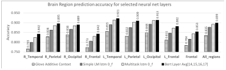

ディープラーニングの心理学的解釈 (心理学特講IIIA)¶
本日の学習目標¶
-
用語の理解と区別:
- 人工知能
- ニューラルネットワーク
- データサイエンス
- ビッグデータ
- ニューラルネットワーク
- ディープラーニング
-
先週の復習 colab
- 実習
- ニューラルネットワークの歴史
3 つの分野の略史¶
| 人工知能 | ニューラルネットワーク | 心理学 | |
|---|---|---|---|
| 第一次 1950- | 記号処理 | パーセプトロン | 認知革命 |
| オモチャ問題 | ADALINE | ||
| ネオコグニトロン | |||
| アソシアトロン | |||
| 第二次 1980- | Expert systems | 誤差逆伝播法 | コネクショニスト |
| Brooks | リカレントニューラルネットワーク | 脳画像研究 | |
| 強化学習 | 計算論的アプローチ | ||
| 第三次 2010- | ディープラーニング | ||
| 畳み込みニューラルネットワーク |
 Goodfellow et al. (2017) Fig.1 を改変
Goodfellow et al. (2017) Fig.1 を改変
実習¶
先週の補足¶
- 先週の話で，AI 人材 25 万人は，チャンスだと捉えてほしい。
- 引用と自分の意見とを分ける
- nothotdog
AI の分野¶
- 推論，問題解決 Reasoning, problem solving
- 知識表象 Knowledge representation
- 計画 Planning
- 学習 Learning
- 自然言語処理 Natural language processing
- 認識 Perception
- ロボティクス Motion and manipulation
- 社会知能 Social intelligence
- 創造性 Creativity
- 一般知能 General intelligence
AIの進歩の ５ つの要因¶
- 計算能力の向上 (ムーアの法則，GPU, ASIC)
- データ爆発 (e.g. ImageNet, AMT),
- アルゴリズムの改善 (e.g. 誤差逆伝播法, CNN, LSTM)
- 基盤の整備 (Linux, TCP/IP, Git, ROS, PR2, AWS, TensorFlow)
- エコシステム 情報共有 (arXiv, Git, Reddit, Quora, Stackoverflow, ...)
from Karpathy's blog "Deep Reinforcement Learning: Pong from Pixels"
考え方，背景，キーワード¶
- 構成論的アプローチ vs 分析的アプローチ （人工知能と心理学との関係）
- 神は細部に宿る God is in the detail. あるいは 悪魔は細部に宿る (The devil is in the detail)
- Carbon chauvinism 日本語で炭素排外主義と訳します。これは本当だろうか？
- p-値廃止の影響
- 計算論モデル
数学とモデル¶
数学的知識の詳細は不要だが，その精神は理解しておく必要がある。
- 万物は数なり --- ピタゴラス
- 宇宙は数学語で書かれている。数学なしでは迷宮を理解できない --- ガリレイ
- 作れなければ理解できたと言えない --- ファインマン

今際の際に黒板に書いてあったファインマンの言葉，カリフォルニア工科大学アーカイブ写真
{kind=link}
- 若者よ，数学は理解するものではない，ただ慣れるだけだ --- フォン・ノイマン
- 科学は説明しないし，解釈もしない。ただモデルを作るだけである。この場合モデルとは観察された現象を説明する数学(的構成物)である。そのモデルは，ひとえに期待どおり正確であることで正当化される。 --- フォン・ノイマン
- われわれの宇宙はただ単に数学で記述されているだけではない。宇宙は数学である，我々は皆，大きな数学的実態の一部なのだ。--- テグマーク
文献¶
- 労働新聞平成31年2月25日号 知識を拡張する道具 人類の歴史の延長線上に
- イラストで学ぶ 人工知能概論 (KS情報科学専門書) (谷口,2014) https://www.amazon.co.jp/gp/product/4061538233/
次の語の示すサイトを訪れ，それぞれどのようなサイトかを調べよ¶
- arXiv
- Github
- Stackoverflow
ところで知能とは何だろうか？¶
ニューラルネットワークの歴史¶
画像認識の進歩

第 1 次ニューロブーム¶
1950年代:¶
- ウォーレン・マッカロックとワイルダー・ピッツによる 形式ニューロン の提案 (サイバネティクスの創始者ノーバート・ウィーナーの集めた研究者集団)


ウォーレン・マッカロック と ワイルダー・ピッツ
形式ニューロンは，シナプス結合荷重ベクトルと出力を決定するための伝達関数とで構成される(次式)
ここで は 番目のニューロンの出力， は 番目のニューロンの出力， はニューロン と との間の シナプス結合荷重。 は活性化関数。

形式ニューロン
ローゼンブラット Rosenblatt のパーセプトロン¶

フランク・ローゼンブラット
 パーセプトロンの模式図 ミンスキーとパパート「パーセプトロン」より
パーセプトロンの模式図 ミンスキーとパパート「パーセプトロン」より
 ニューロンの模式図 wikipedia より
ニューロンの模式図 wikipedia より
- 1960 年，ミンスキーとパパートの批判
- 第一次氷河期の到来
第 2 次ニューロブーム¶
- 1986 年，PDP ブック，俗に言うバイブル，発表
- 1989 年，バプニック，サポートベクターマシン発表
- 第二次氷河期の到来
第 3 次ニューロブーム¶
- 2013 ICLR スタート arXiv.org に予め論文を投稿，誰でも読める，誰でも批判できる。著者はそれに答えなければならない。あっという間にトップカンファレンスとなる
- 2013 Mikolov word2vec を発表

Mikolovの類推課題
- 2013 DeepMind DQN を発表
DQNの結果
- 2014 Neural Image Captioning が注目を集める。

- Human: A group of men playing Frisbee in the park.
- Machine: A group of young people playing a game of Frisbee.
- 2015 画像生成技術が注目を浴びる

- 2015 人工知能学会が日本では「深層学習」と呼ぶことに決定する
- 2016 GAN が注目を浴びる

Generative Adversarial Text to Image Synthesis

Generative Adversarial Text to Image Synthesis arXiv:1605.05396v2
- 2016 アメリカ合州国大統領候補の一人の発言を模倣する「ディープトランプ」がツィッター上で注目を集める


- 2016 アルファ碁がイ・セドルを破る
 アルファ碁 Natureより
アルファ碁 Natureより
ボストン・ダイナミクス社ビデオ¶
source:
source:
フェイク画像の生成¶

source:
領域切り出し¶

 LeCun (2013) より
LeCun (2013) より
 LeCun (2013) より
LeCun (2013) より